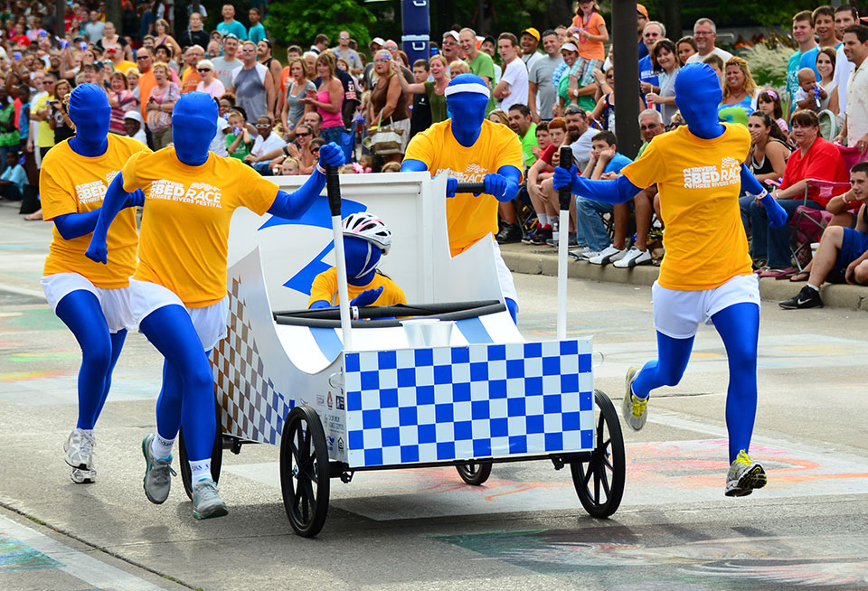
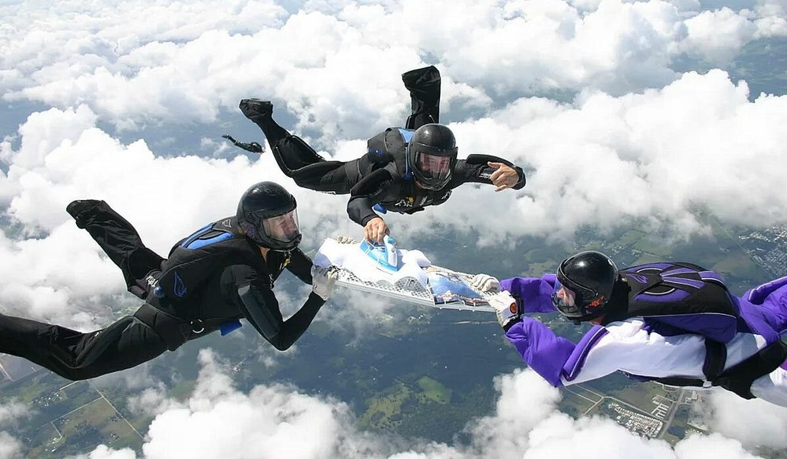
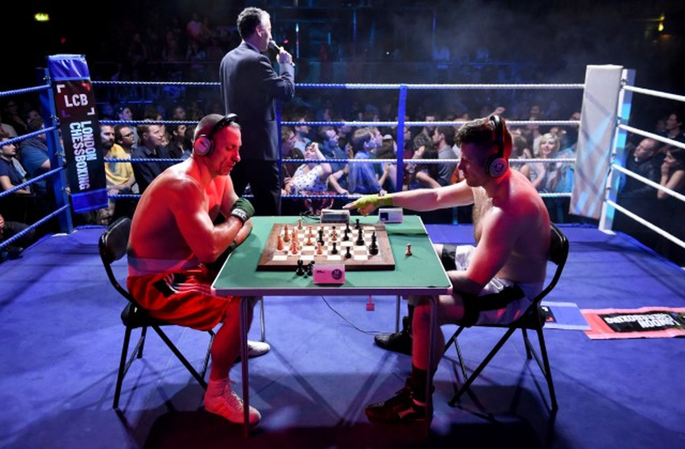
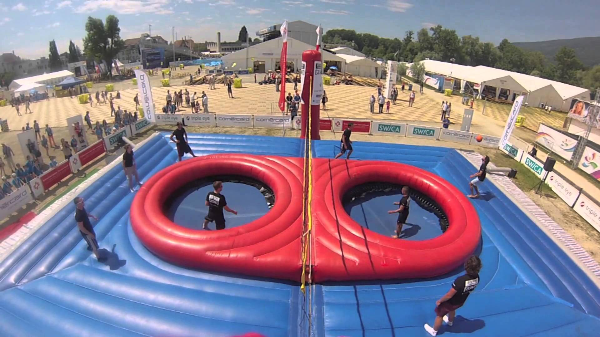

Top 5 Unusual sport
-

Bed Racing
The sport of Bed Racing has been embraced by the people of the North Yorkshire Town of Knaresborough, who hold the annual Knaresborough Bed Race.
-

Zorbing
Born in New Zealand, Zorbing is a new adrenaline experience that involves hurtling down a hill in a huge inflatable ball - an unreal experience with a true fun factor that really needs to be experienced to be believed!
-

Ironing
Extreme ironing was an idea that started in Leicester, England, in 1997.It combines an exciting and dangerous experience with the dull and boring, and it certainly does a good job of that!
-

Chess Boxing
People say chess is the ultimate intellectual sport. But if you want to follow the old Roman advice and cultivate a "healthy mind in a healthy body," chess boxing may be just what you need!
-

Bossaball
Bossaball is the ultimate mix of soccer tricks, volley skills and extreme gymnastics topped with exotic tunes.
Bed Racing
Sport
The competitors race in teams of six, plus one on the bed. Each team must provide their own bed, decorated in the theme for the year. The bed runs on four wheels, but also need to be able to float, as explained below.The 3km run race begins and ends at Conyngham Hall. About halfway through the run, the teams face the one-in-five gradient climb to Castle Top before it’s back down the hill and toward the final challenge – crossing a river.
Top Video
Zorbing
Sport
Believe it or not, you can now find out exactly what it feels like. Thanks to the invention of zorbing — also called globe-riding, sphereing or orbing — adventurous people can now have fun rolling downhill inside a huge sphere made of see-through plastic.
Top Video
Extreme Ironing
Sport
Have you ever heard of extreme ironing? If you haven’t, you wouldn’t be the only one. Ironing is a physical chore describing the act of using steam and metal to remove any wrinkles on our clothes. It involves an ironing board, which is a flat narrow board with foldable legs attached, and the steam iron, which is the machine used to collect steam and heat to remove wrinkles. The word extreme refers to something over the top, great, or at its highest level. So what is the highest level of ironing?
Top Video
Chess Boxing
Sport
World Chess Boxing Association The World Chess Boxing Association (WCBA) is another international organization that aims at developing the chess boxing industry. The WCBA was founded in 2013 and also recognizes world champions crowned by the WCBO. Chess Boxing Global The Chess Boxing Global Marketing, also known as Chess Boxing Global (CBG), is a professional chess boxing league founded in 2013. Since its creation, the CBG has organized the officially recognized world chess boxing championships.
Top Video
Bossaball
Sport
Bossaball is a relatively new sport invented by a Belgian athlete named Filip Eyckmans in 2004, who lived in Spain at the time. Bossa is a Portuguese word that means ‘Style’. The word “Bossa” is also associated with Bossa Nova or Samba music, which is very popular in Spanish countries.The popularity of Bossaball soon reached countries in Europe, the Middle East, and Latin America. Mohamad Saifudin then introduced Bossaball to Singapore in 2007. It became so popular in Singapore that they formed a national Bossaball team, which participated in the Bossaball World Cup in Turkey.